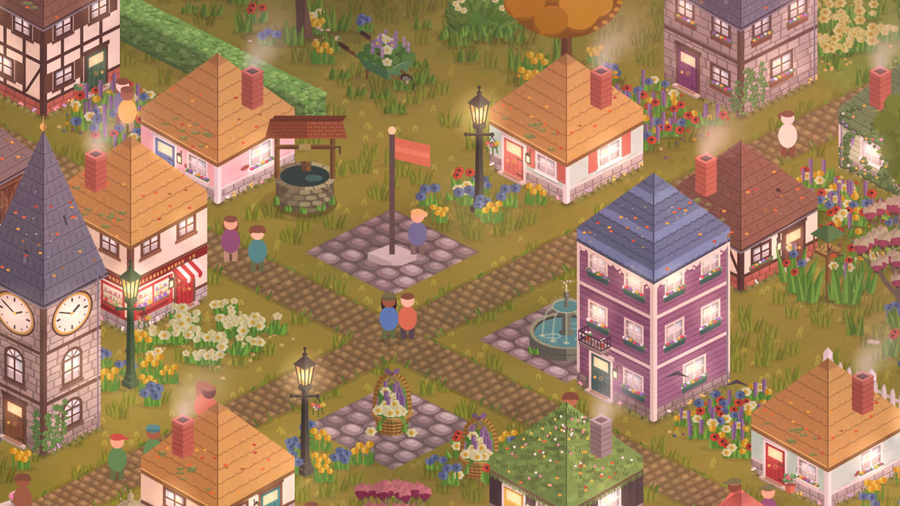
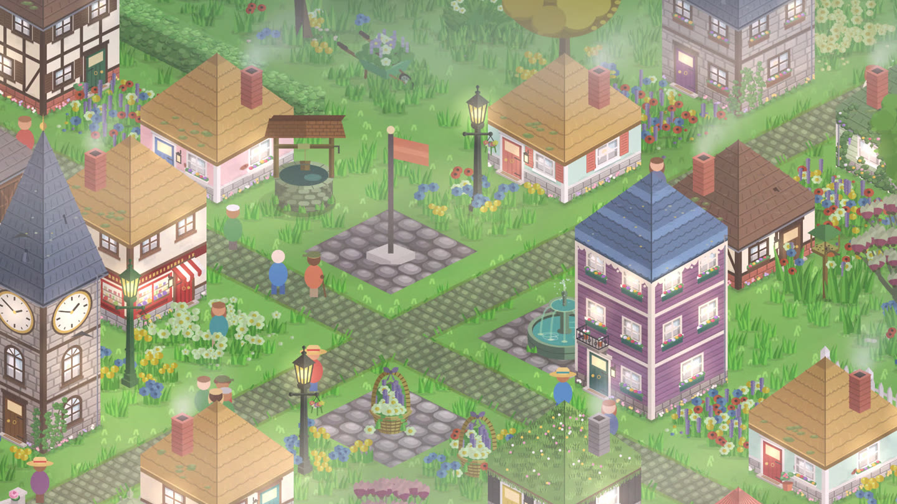
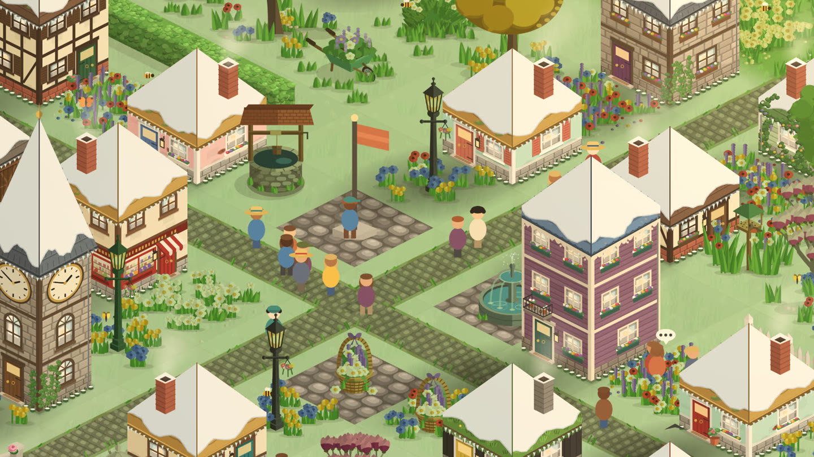

Seasons, sunsets and full moons
Your StepHaven town keeps the same time you do. Walk home at dusk and the lamps are coming on; wake up in December and there's snow on the roofs.

Plenty of town builders sit in a permanent sunny afternoon. StepHaven doesn't. It reads your phone's clock and the date, so your town has mornings and evenings, weather and seasons, and they line up with the walk you've just been on. Nothing is downloaded for any of this: the whole sky is worked out on your phone.
A day in your town
The light moves through the day the way it does outside, easing from one look to the next rather than switching.
| Around | What you'll see |
|---|---|
| 5:30 am | Dawn: soft light, mist in the valleys, the first windows lighting up |
| 7:30 am | Morning: clear air, dew sparkling on the grass, sunbeams through the trees |
| Midday | Bright and even, short shadows |
| 5 pm | Afternoon: low warm sun and long shadows |
| 7 pm | Dusk: the lamps come on and light the ground round them |
| 8:30 pm | Night: a moonlit town, glowing windows, fireflies over the ponds |
Late at night most of the houses go dark one by one, a few night owls keep a light burning, and early risers switch theirs back on before dawn. Chimney smoke drifts slower and lower in the cold small hours.
Weather
Some nights roll in foggy, more often in autumn and winter: the mist pools in the low ground, lamps glow through it, and sounds go soft. Some mornings bring a light drizzle that clears up by late morning. It's different every day, but if you share a town with friends, you all get the same weather.

The seasons
Seasons follow the calendar where you live: in the northern hemisphere, spring is March to May, summer June to August, autumn September to November and winter December to February. If your phone is set to a southern time zone, they're the other way round.
- Spring is fresh and bright.
- Summer is the deep green the game starts in.
- Autumn turns the grass gold and scatters leaves on the roofs.
- Winter brings frost and snow: snow on the roofs of the houses you design, icicles along the eaves, and more steam rising off the ponds in the morning.
Flowers hold on to their colour through autumn and winter, so a flower bed becomes a little splash of colour in a frosty town.

Full moons and the Moonfair
On every real full moon, Barnaby Moon's travelling fair comes to town for a day: a painted caravan with a moon rabbit on the roof and a few curiosities you can't buy anywhere else. The fair arrives at the same moment for everyone in the world, because it follows the actual moon. Each moon has its old name, and the second full moon in a month is a Blue Moon. The next one is November's Beaver Moon, on November 24.
Little things that keep time
- Build a Bell Tower Chapel and it rings the hour through the day.
- A stone circle glows at sunrise and sunset, and on the solstices in June and December a shaft of sunlight falls through its gate.
- Villagers keep hours too: they head out in the morning and drift home at night.
If you'd rather it didn't change
All of this can be switched off, town by town. When you start a town (or later, from its card in your list of towns) you can choose:
- Classic instead of Seasonal, for summer all year round.
- Always Day instead of Day & Night, for a town that stays in the midday sun.
There's also a Seasons setting that pins one season for your towns on this phone, if you'd like a snowy town in July. A town you share with friends follows the clock of whoever started it, so you all see the same dawn and the same dusk.
StepHaven: Cozy Town Builder
Free on iPhone. No ads, and your steps stay on your phone.
Download on theApp Store